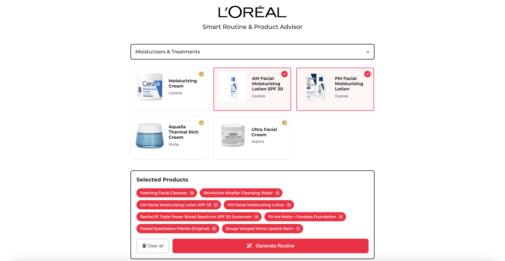
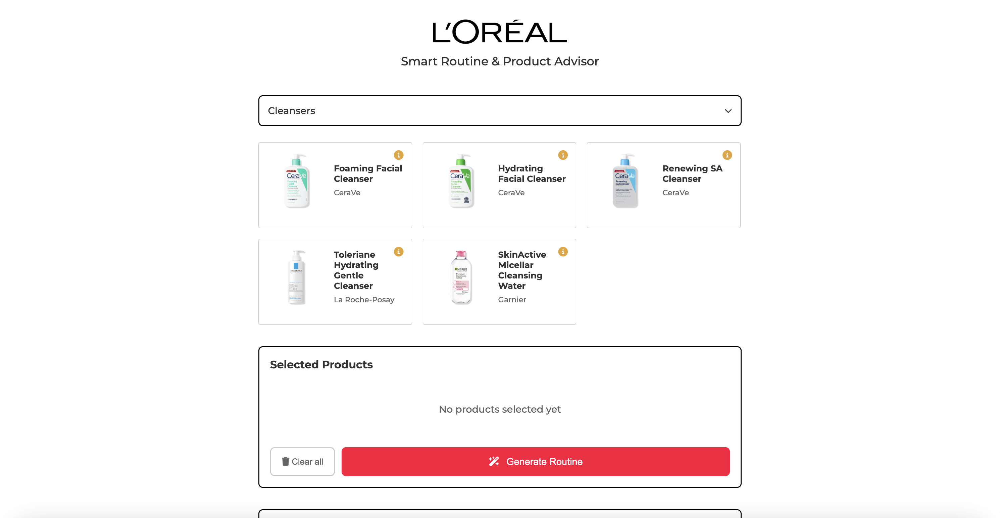

Interactive Tool · AI Integration
L'Oréal Routine Builder
An AI-powered tool that connects beauty product discovery with personalized routine building.
My role
Interface design and front-end development
Tools
HTML, CSS, JavaScript, JSON, Cloudflare Workers, AI
Project type
Course project

01 / Project overview
Project overview
L'Oréal Routine Builder is an interactive web app that helps users explore beauty products and build a personalized routine with AI. Users can browse products across categories such as skincare, haircare, makeup, and fragrance, select the products they are interested in, and generate a step-by-step routine based on their selections.
I developed this project to explore how AI could make product discovery more interactive and help users bring their chosen products together into a routine. By combining a product catalog with a conversational advisor, I wanted to create an experience where users could both explore products and receive guidance in one place.
02 / The challenge
Connecting product discovery with personalized guidance
Choosing beauty products is only one part of building a routine. Users also need to understand how their selected products fit together and how to incorporate them into their routine.
I wanted to connect these two steps in one interface rather than treat product browsing and routine recommendations as separate experiences. The challenge was to make it easy for users to explore products, keep track of their selections, and turn those selections into a personalized routine.
My design question
How might I help users move from browsing beauty products to building a personalized routine through an intuitive, AI-assisted experience?
03 / Design and development
Designing the experience
I organized the experience around three main interactions: exploring products, selecting favorites, and generating a routine.
Category-based product discovery
I added a category dropdown that allows users to browse products by type, including cleansers, moisturizers and treatments, haircare, makeup, hair color, hair styling, men's grooming, suncare, and fragrance.
Filtering the catalog by category gives users a more focused way to explore the available products instead of navigating one long list.

Interactive product selection
Each product card displays the product's image, name, and brand, with an option to reveal its description. Users can select products they're interested in and see their choices collected in a separate Selected Products section.
I also added controls to remove individual products or clear the entire selection. This lets users review and adjust their choices before generating a routine. Their selections are also saved between page visits, so they can return without immediately losing their progress.

AI-generated routines
Once users have selected their products, they can click Generate Routine to receive a step-by-step routine based on those choices.
Rather than asking the AI to generate recommendations without context, I pass the selected products' names, brands, categories, and descriptions to the assistant. The instructions guide it to build the routine using the selected products, helping connect the product-browsing experience with the final recommendation.

Conversational follow-up
I added a chat interface so users can continue the conversation after their routine is generated. They can ask follow-up questions about their routine or ask related questions about skincare, haircare, makeup, and fragrance.
The conversation retains its previous messages, allowing the assistant to reference the routine it generated instead of treating every question as an entirely new interaction. This extends the experience beyond a single recommendation and gives users a place to explore additional questions.

04 / Development
Connecting product data and AI
One of the main technical challenges was bringing together the product catalog, interactive selections, and AI-generated responses.
I stored the product information in a JSON file and used JavaScript to load the data, filter products by category, create product cards, and update the selected-products list as users interacted with the interface.
I also used browser storage to preserve product selections between visits. This required keeping the product cards, selection list, and saved data synchronized as products were added or removed.
For AI functionality, I connected the front end to a Cloudflare Worker endpoint. When users generate a routine or submit a chat message, JavaScript sends the conversation to the endpoint and displays the assistant's response in the chat window.
Building these interactions helped me understand how front-end development, structured data, and AI integration can work together to create a more complete product experience.
05 / Next steps
What I would improve next
If I continued developing L'Oréal Routine Builder, I would focus on making product discovery more flexible and helping users understand their recommendations more clearly.
06 / Reflection
Key takeaway
Building L'Oréal Routine Builder helped me explore how AI can support an interactive product experience beyond a standard chatbot. By connecting product browsing, selection management, routine generation, and follow-up conversations, I learned how multiple features can work together to guide users through a more complete experience.
The project also strengthened my understanding of front-end development and AI integration while reinforcing the importance of making complex functionality feel approachable. Moving forward, I want to continue exploring how thoughtful interface design can make digital products more intuitive, personalized, and useful.